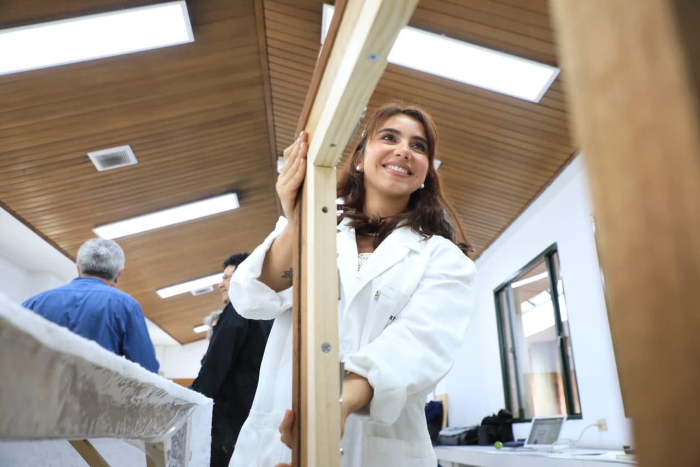
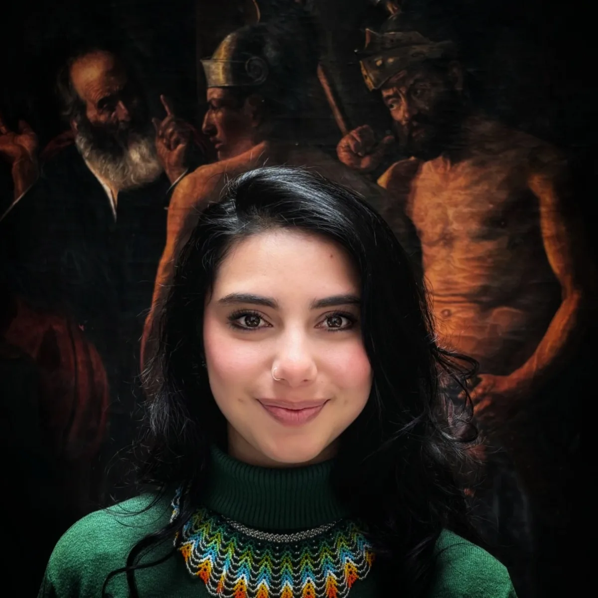
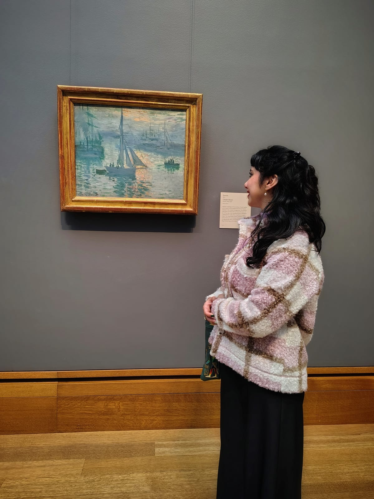
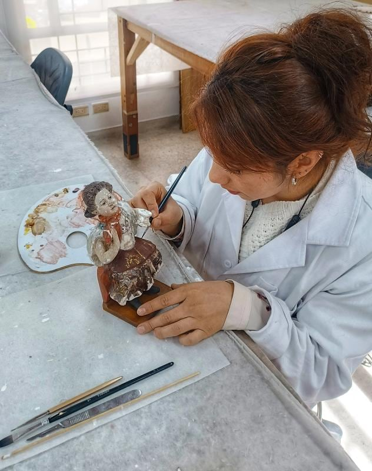
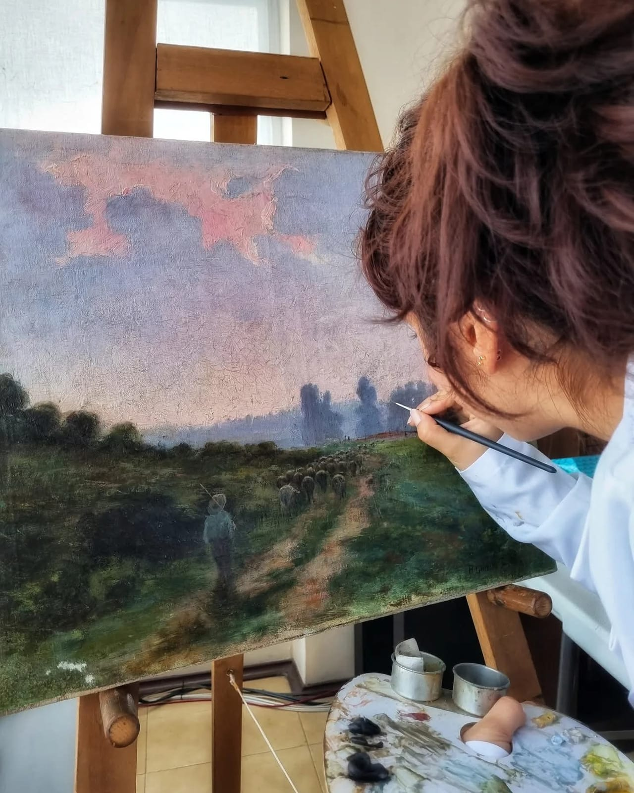
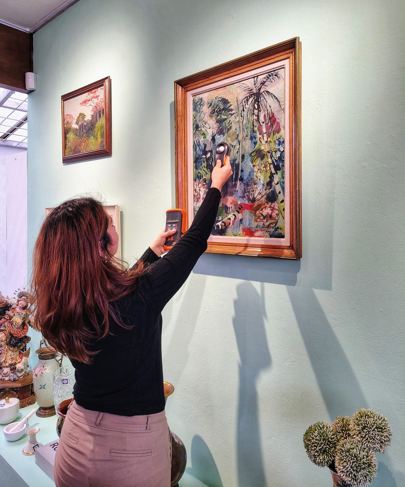
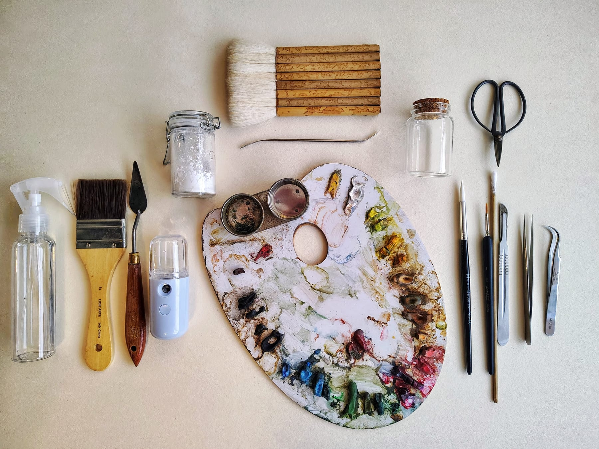

La Independencia · Casa de Subastas
Dirección del Departamento de Conservación y Restauración y gestión de los bienes culturales que ingresan al mercado de subastas.
Conservo y restauro patrimonio cultural justo donde la obra entra en circulación —subastas, colecciones privadas e institucionales—. Uno el cuidado material de la pieza con la transparencia que el mercado del arte necesita.
01 — Perfil

Soy profesional en Conservación y Restauración de Patrimonio Cultural. Trabajo en restauración, conservación preventiva, documentación, estudios técnicos, diagnóstico de estados de conservación y gestión de colecciones —tanto en piezas individuales como en conjuntos patrimoniales.
Mi línea de investigación es el rol transversal del conservador-restaurador en el mercado del arte: cómo nuestra participación fortalece la protección, la valorización y la transparencia de los bienes culturales que circulan entre instituciones, casas de subastas y colecciones privadas.
Cada gesto se justifica. Lo que no es necesario, no se toca.
Todo tratamiento debe poder deshacerse sin dañar el original.
El registro técnico y fotográfico acompaña a la obra como su memoria.
02 — Especialización
03 — Enfoque
El conservador-restaurador no termina en el taller. En el mercado del arte —subastas, tasaciones, colecciones que cambian de manos— su criterio es lo que protege la obra y da transparencia a su circulación.
Ese cruce entre conservación, valoración y mercado es el centro de mi trabajo y de mi investigación: cuidar la pieza y, a la vez, sostener la confianza con que se compra, se vende y se hereda.

04 — Proyecto destacado

Módulo de demostración — el deslizador queda listo para recibir la documentación fotográfica real del antes y el después de la restauración.
Restauración de una pieza colonial perteneciente a la colección de pesebre de la Iglesia de San Francisco de Asís, en Bogotá. Espacio para la memoria del tratamiento: estado de conservación inicial, diagnóstico, limpieza, consolidación, reintegración cromática y criterios de intervención.
05 — Selección

Dirección del Departamento de Conservación y Restauración y gestión de los bienes culturales que ingresan al mercado de subastas.

Diagnóstico y restauración de obra pictórica perteneciente a la colección del banco.

Análisis de condiciones ambientales y consultoría en conservación preventiva para la colección privada.
06 — Intervenciones
Una selección de procesos de conservación y restauración.
07 — Metodología
Toda intervención sigue una secuencia ordenada. Cada etapa documenta a la anterior y condiciona a la siguiente: el método es lo que separa la restauración de la improvisación.
Observación con luz visible, rasante y ultravioleta. Identificación de materiales y alteraciones.
Determinación del estado de conservación y de las causas del deterioro.
Registro fotográfico, cartografía de daños y propuesta de intervención.
Limpieza, consolidación y reintegración con materiales estables y reversibles.
Recomendaciones de manipulación, exhibición y control ambiental.

08 — Trayectoria
09 — Contacto